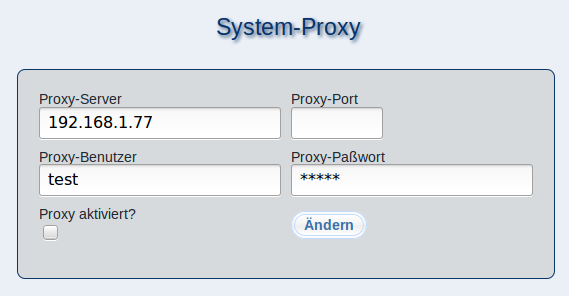

Sollte Ihr m23-Server über einen Proxy-Server mit dem Internet verbunden sein, so können Sie in diesem Dialog die Proxy-Einstellungen vornehmen.
Tragen Sie hierbei unter ''Proxy-Server'' und ''Proxy-Port'' die IP-Adresse bzw. den auflösbaren Namen des Proxys nebst der Port-Nummer ein. Sollte eine Authentifizierung nötig sein, so geben Sie die Zugangsdaten unter ''Proxy-Benutzer'' und ''Proxy-Paßwort'' an.
Zum Aktivieren des Proxys setzen Sie den Haken bei ''Proxy aktiviert?'', zum Deaktivieren entfernen Sie diesen hier.
Klicken Sie anschließend auf ''Ändern'', um die Änderungen zu speichern.
root
2016-10-07